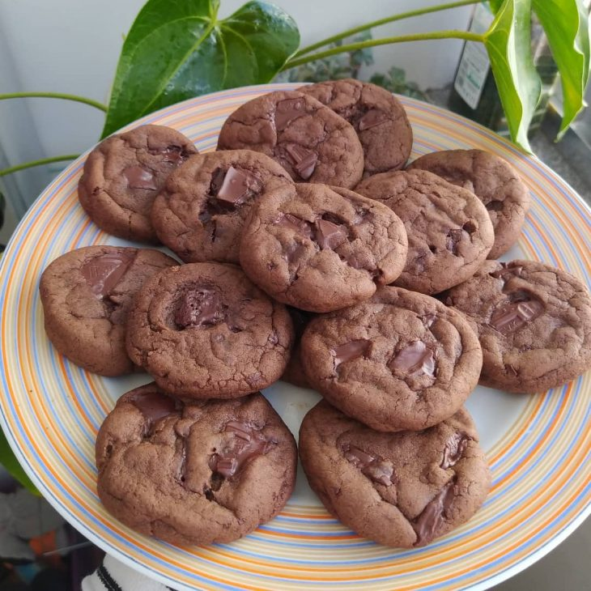

Voltar para a Homepage
Receita de cookies veganos com duplo chocolate

SObre a receita
Delicie-se com nossos irresistíveis cookies veganos!
Feitos com ingredientes saudáveis e sem nenhum produto de origem animal, essas delícias crocantes e macias vão conquistar seu paladar e fazer você se sentir bem.
Experimente agora mesmo!
Ingredientes
- 4 colheres de sopa de leite vegetal
- 4 colheres de sopa de óleo vegetal
- 8 colheres de sopa de açúcar mascavo
- 2 colheres de sopa de cacau em pó
- 16 colheres de sopa de farinha de trigo
- 1/2 colheres de sopa de fermento em pó
- 1 pitada de sal
- 50 gramas de chocolate vegano picado
- Em uma vasilha, coloque o leite, óleo, açúcar e cacau.
- Misture bem, até obter uma mistura homogênea.
- Acrescente a farinha, o fermento e o sal e amasse com as mãos, até formar uma massa uniforme.
- Adicione o chocolate picado e misture mais um pouco.
- Cubra a massa e reserve na geladeira por 20 minutos.
- Molde bolinhas de massa com as mãos e disponha cada bolinha separadamente em uma assadeira.
- Asse em forno preaquecido a 180°C por cerca de 10 minutos.
- Deixe esfriar por alguns minutos para endurecerem ao esfriar.
- Agora é só servir! Bom apetite.
Receita original